Apache Doris 在美团点评的实践
作者: 康凯森
日期: 2019-04-27
分类: OLAP
本文的内容是我 4 月 13 日在 Doris Meetup 上的分享，我主要从技术选型，典型应用，平台化建设，功能改造 4 方面进行了分享。
技术选型
背景
在2017年年底，我们已经维护了 Kylin 和 Druid 两个开源 OLAP 系统，Kylin 主要满足离线固化多维分析的需求，Druid 主要满足实时多维分析的需求。
所谓的固化多维分析，指需要提前预定义维度和指标，然后查询时需要根据定义好的维度和指标进行查询，这样就无法满足即席的灵活多维分析需求，比如任意字段聚合，任意多表 Join。
还有一点就是 Kylin 和 Druid 都是基于预计算的系统，没有保留明细数据，无法进行明细查询。（注：Kylin 和 Druid 都可以通过一定的间接方式实现明细查询，但限制较多）
用户需求
- 灵活多维分析
- 明细+聚合
- 主键更新
随着我们用户上面 3 类的需求越来越多，我们决定在 2018 年初的时候调研当时开源的 ROLAP 系统，并进行落地。
Why Not Other ROLAP
我们当时主要调研了 SQL on Hadoop，ClickHouse，SnappyData，TiDB，Doris 等系统， 这些系统都是优秀的开源系统，并且都有其适用场景。我们在选型时主要从功能，架构，性能，易用性，运维成本等几个维度去考虑。
下面我先介绍下我们为什么没有选择这些系统，再介绍我们为什么选择了 Doris。
- SQL on Hadoop 系统：无法支持更新，性能也较差。
- TiDB： TiDB 虽然当初号称可以支撑 100%的 TP 和 80%的 AP，但是架构设计主要是面向 TP 场景，缺少针对 AP 场景专门的优化，所以 OLAP 查询性能较差，TiDB 团队目前正在研发专门的 OLAP 产品：TiFlash，TiFlash 具有以下特点：列存，向量化执行，MPP，而这些特点 Doris 也都有。
- SnappyData：SnappyData 是基于 Spark + GemFire 实现的内存数据库，机器成本较高，而我们机器资源很有限，此外 SnappyData 的计算是基于 JVM 的，会有 GC 问题，影响查询稳定性。
- ClickHouse：Clickhouse 是一款单机性能十分彪悍的 OLAP 系统，但是当集群加减节点后，系统不能自动感知集群拓扑变化，也不能自动 balance 数据，导致运维成本很高，此外 Clickhouse 也不支持标准 SQL，我们用户接入的成本也很高。
Why Doris
对我们用户来说，Doris 的优点是功能强大，易用性好。 功能强大指可以满足我们用户的需求，易用性好主要指 兼容 Mysql 协议和语法，以及 Online Schema Change。 兼容 Mysql 协议和语法让用户的学习成本和开发成本很低， Online Schema Change 也是一个很吸引人的 feature，因为在业务快速发展和频繁迭代的情况下，Schema 变更会是一个高频的操作。
对我们平台侧来说，Doris 的优点是易运维，易扩展和高可用：
- 易运维指 Doris 无外部系统依赖，部署和配置都很简单。
- 易扩展指 Doris 可以一键加减节点，并自动均衡数据。
- 高可用值 Dors 的 FE 和 BE 都可以容忍少数节点挂掉。
典型应用
变化维表 Join

变化维表的 Join 是我们外卖业务很典型的一个应用，我们外卖中的蜂窝，商家类型等维表属性会经常更新，并且需要用最新的维表属性去关联商家事实表的历史数据。 还有一点是外卖的商家属性是按照日，周，月，7，15，30 这 6 个时间口径统计的，而且这里面的周，月，7，15，30 不能按天直接累加，所以之前在 MOLAP 系统中，用户需要先建 6 张宽表，再基于 6 张宽表构建 6 个 Cube。 为了满足用最新的维表数据去关联事实表的历史数据的需求，就需要每天重刷几百天的历史数据。其实用户的高频查询都是近 1 个月的数据，但是为了满足极个别查很久历史数据的需求，就必须得重刷几百天的历史。 这样就会浪费大量的计算资源，而且数据冗余比较严重，开发效率低下。

有了 Doris 之后，我们就只需要按天同步事实表和维表，然后查询时现场 Join 就可以。 不需要每天重刷历史数据，开发效率也会提升很多。
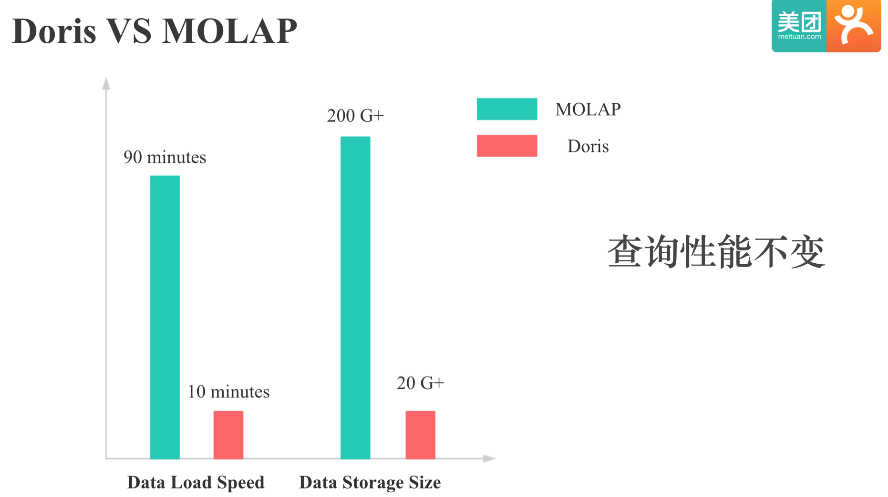
上图中展示的是 Doris 和 MOALP 系统对同一个商家分析应用在数据导入和数据存储方面的对比，可以看到，在保持查询性能不变的前提下，Doris 在导入速度和存储效率上都有了很大的提升。
明细 + 聚合

同时查询明细和聚合是用户比较常见的需求，但是由于 Kylin 和 Druid 不能支持明细查询，所以用户就需要用 Mysql 或者 ES 来满足明细需求，再用 Kylin 和 Druid 来满足聚合需求，这样就有两条开发链路，数据也有冗余，并且可能还会有数据一致性的问题。
有了 Doris 之后，我们只需要 Doris 一个引擎就可以同时 Cover 明细 + 聚合的需求，用户的开发流程就会简化许多。
外卖准实时数仓

上图中是我们外卖准实时数仓的一个示意图，数据会从 Kafka 和 Hive 进入 Doris 中，然后每 15 分钟会通过 Doris to Doris ETL 计算实时和离线的同环比（外卖的特殊业务需求）。
这个应用中主要依赖了 Doris 以下特性：
- 同时支持实时和离线数据导入。
- Doris To Doris ETL， 这个指的是 Doris
insert into select的功能 - 还有一个是主键去重，建模时用的是 Doris 的 UNIQUE KEY 模型，Doris 的主键去重和主键更新也是我们用户广泛使用的功能。
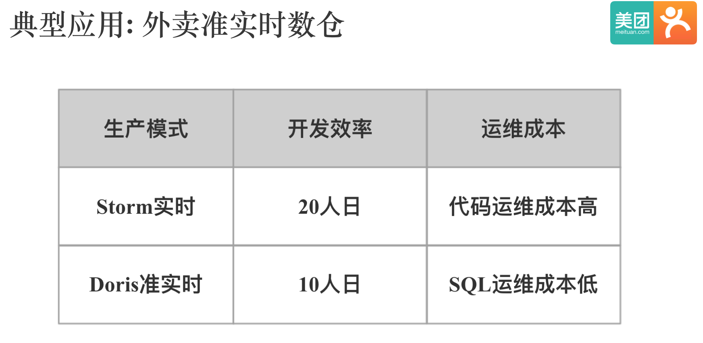
上图中展示的是我们外卖基于 Doris 构建准实时数仓，和基于 Storm 构建的实时应用的开发效率对比，用 Storm 开发需要 20 人日，用 Doris 开发需要 10 人日，这个效率的差别应该主要来自写 SQL 和写代码的效率差别。
Doris 服务现状

上图中展示的是我们 Doris 服务的现状，规模不大，目前还在快速增长中。 其实脱离业务场景谈这些数字的意义都不是很大，我们目前的规模虽然不大，但是很多业务场景还是蛮有挑战的。
平台化建设
- 编译部署
- 监控报警
- 用户手册
- 核心性能指标收集和 Dashboard
- 公司周边系统集成
- 回归测试框架
- 大查询报警
- 自动化运维脚本
上面这些事情是每个开源系统落地都需要做的事情，我就不细说了。下面我介绍下我在数据导入方面的平台化建设，包括离线的 Hive to Doris 和 实时的 Kafka to Doris。
Hive To Doris
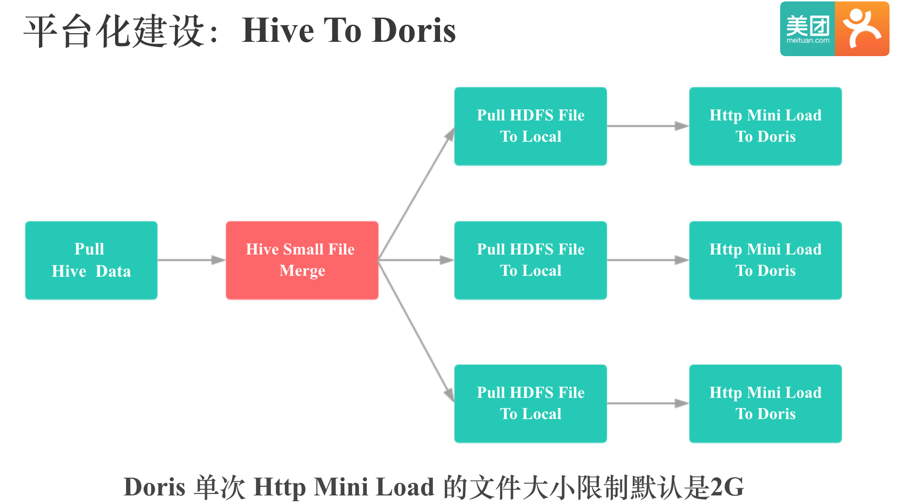
我们的 Hive To Doris 是基于 Doris 的 Http mini load 实现的，上图是整个 Hive To Doris 的流程示意，首先会用 Hive 客户端将 Hive 表数据经过过滤，Null 值处理，格式转换，Split 后存储到 HDFS 上，然后多线程从 HDFS 将数据拉取到本地，紧接着将数据通过 Http 方式导入到 Doris 中。
我们知道，Doris HTTP mini Load 对单次导入文件的大小是有限制的。所以我这里讲 Hive to Doris，主要是想分享这个 Hive 小文件合并过程，我是用 Hive 小文件合并解决了大文件 Split 的问题，可以利用 MR 来分布式 Split，让 Split 过程十分高效：
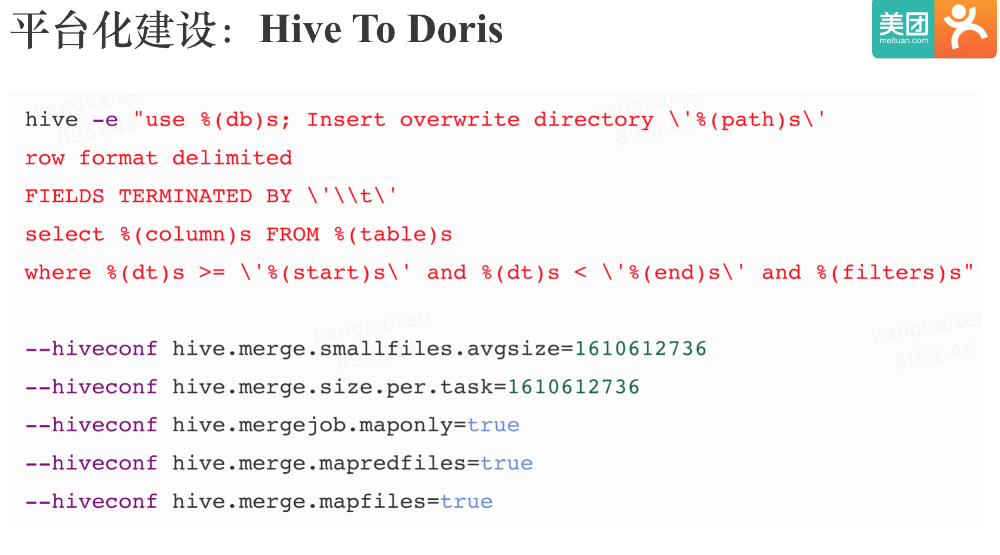
这里需要注意的一点是，在极端情况下，有些 ORC 格式存储的 Hive 表压缩比很高，导致第一步MR的单个 Mapper 输出文件大小达到好几 G，进而无法触发 Hive 小文件合并过程。 解决方法可以调大 Doris BE 的mini_load_max_mb参数，或者让用户修改 Hive 表存储格式。
Kafka To Doris
下面我们来看下 kafka To Doris,首先我们来看下 Doris 原生的 Stream Load 实现:
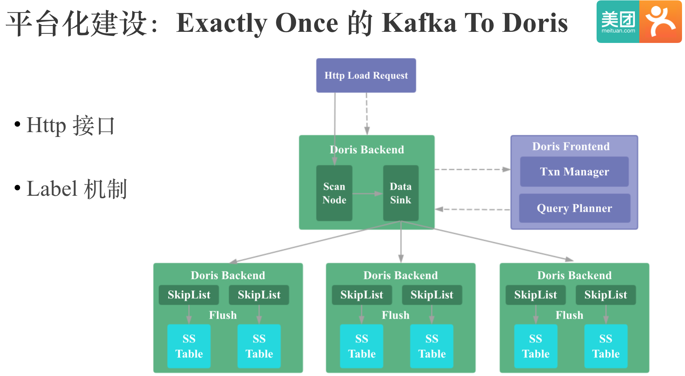
图中是 Doris 的 Stream Load 示意图，FE 负责事务管理和导入的 Plan 生成，执行 Plan 的 BE 会将实时数据传输到每行数据对应的 Tablet 所在的 BE 上，数据首先会以 Skiplist 的数据结构保存在内存中，等超过一定大小后，会 flush 成列存。
这里需要注意两点：
- Doris 的 Stream Load 是基于 HTTP 的。
- Doris 的 Stream Load 有 Label 机制，也就是一次导入可以指定一个 Label，Doris 内部一个 Label 会对应一次事务，所以可以保证同一个 Label 的导入只会成功提交一次。
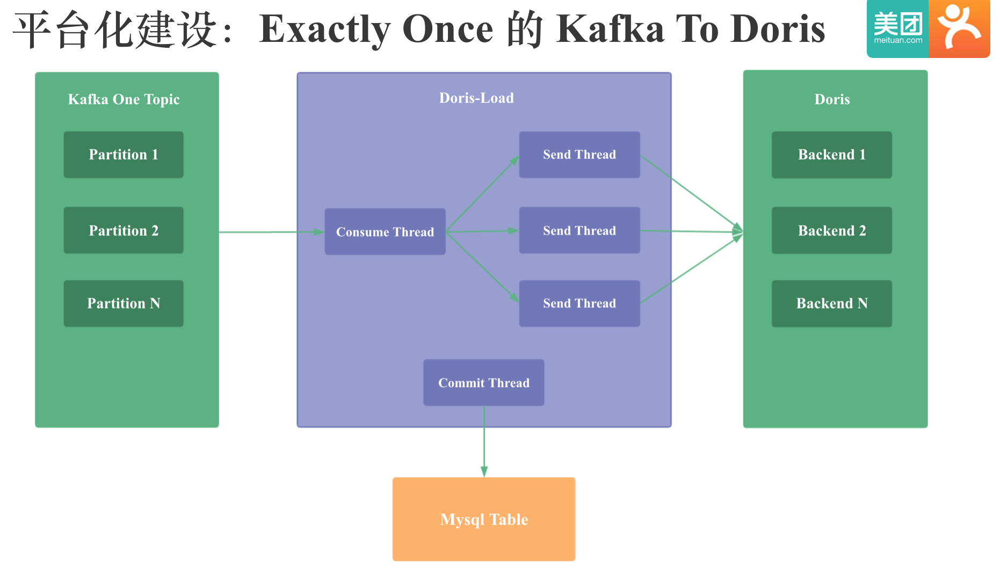
由于 Doris 的 Stream Load 当时不支持从 Kafka 直接消费数据，所以我就在 Doris 的外围实现了 Kafka to Doris，和 Druid 的 tranquility 比较类似。和 Druid 的 tranquility 不同的是，我实现的 Kafka to Doris 可以保证 Exactly Once，Exactly Once 即数据不丢也不重：
- 不丢 是通过 Mysql 记录 Kafka Offsets 来 保证的，只有确认 Kafka 的一批数据已经被 Doris 成功消费后,才会更新 mysql 中 Kafka 的 offsets。
- 不重 是通过 Doris 的 label 机制保证的，前面提到 Doris 内部的事务机制可以保证同一个 Label 的导入只会成功提交一次。
关于 Kafka To Doris 的更多原理可以参考： Apache Doris Stream Load & Kakfa To Doris
功能改造
下面介绍下我做的一部分功能改造：包括谓词下推的传递性优化，查询执行多实例并发 和 Colocate Join。
谓词下推的传递性优化
对于下面的 SQL
select * from t1 join t2 on t1.id = t2.id where t1.id = 1
Doris 默认会对 t2 表进行全表 Scan，这样当 t2 表数据量很大时，就会导致上面的查询超时，进而导致外卖业务在 Doris 上的第一批应用无法上线。 其实我们知道，t2 表是没有必要访问所有分区数据的。

实际上基于谓词t1.id = t2.id 和 t1.id = 1, 我们可以推断出新的谓词t2.id = 1，并将谓词t2.id = 1 下推到 t2 的 Scan 节点。 这样假如 t2 表有数百个分区的话，查询性能就会有数十倍甚至上百倍的提升，因为 t2 表参与 Scan 和 Join 的数据量会显著减少。
当然，不是所有的谓词都可以下推的，我们需要区分 where 中的过滤条件和 on 中的连接条件，比如在 left join 中，如果连接条件引用了外表，则谓词不能下推。
当时除了这个优化，谓词下推相关的还做了 Having 中非聚合函数的谓词下推，窗口函数中分区 Key 的谓词下推。
查询执行多实例并发
第二个是近期刚做的查询执行多实例并发优化，问题的背景是我在忙业务做查询优化时发现，Doris 默认在每个 BE 节点上为每个算子只会生成 1 个执行实例，以简单的 count * 查询为例，每个 BE 节点只会有 1 个 scan 算子和 1 个聚合算子，这样每个 BE 节点的 Scan 算子和聚合算子都需要处理大量数据，导致查询性能比较差，而且我发现当时这个集群的资源是比较空闲，并没有充分利用。
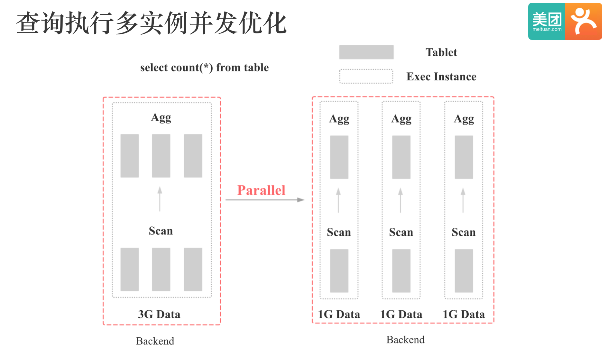
如上图所示，不难想到的一个优化手段是，我们可以在每个 BE 节点上为每个算子生成多个执行实例，这样每个算子只需要处理少量数据，而且多个执行实例可以并行执行，充分利用集群资源，提高单个复杂查询的性能。
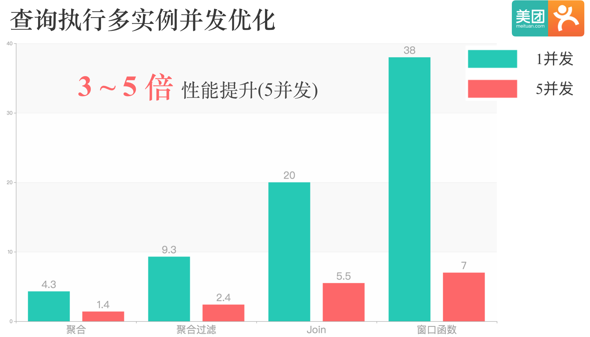
上图中是并发度设置为 5 的优化效果，可以看到对于多种类型的查询，会有 3 到 5 倍的查询性能提升。 该优化比较适合集群资源充足，但是单机资源没有被充分利用的场景，该优化可以通过充分利用集群资源来提高单次复杂查询的性能。这个优化已经贡献到社区，大家可以试用下，我目前在生产环境配置的并发度是 3。
Colocate Join
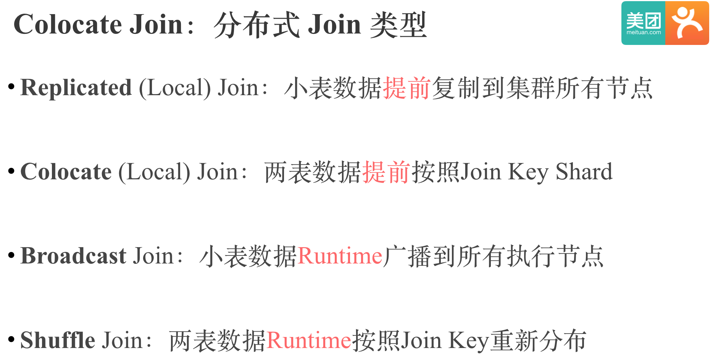
分布式 Join 的执行有 4 种方式：
第一种是 Replicated join，或叫 Local Join。 即将小表的数据提前复制到集群所有节点，查询时进行本地 join, 没有网络传输的开销。 Replicated join 比较适合星型模型的 Join，可以提前将所有小维表复制到集群所有节点。
第二种就是今天要分享的 Colocate Join，即将两表或多表的数据提前按照要高频查询的 Join Key Shard，查询时进行本地的 join，也没有网络传输的开销。 Colocate Join 比较适合 Join Key 较固定的应用场景，比如我们外卖中的商家分析，都是按照商家 ID join。
第 3 种和 4 种就是大家都熟知的 Broadcast Join 和 Shuffle Join，它们的实现原理和适用场景我就不赘述了。 其中 shuffle join 是最通用的实现方式，Colocate join 的优势主要是没有网络传输的优化，但是不通用。
整个 Colocate Join 在 Doris 中实现的关键点如下：
- 数据导入时保证数据本地性
- 查询调度时保证数据本地性
- 数据 Balance 后保证数据本地性
- 查询 Plan 的修改
- Colocate Table 元数据的持久化和一致性
- Hash Join 的粒度从 Server 粒度变为 Bucket 粒度
- Colocate Join 的条件判定
关于 Colocate Join 的更多细节可以参考：Apache Doris Colocate Join 原理与实践
对于下面的 SQL, Doris Colocate Join 和 Shuffle Join 在不同数据量下的性能对比如下：
select count(*)
FROM A t1
INNER JOIN [shuffle] B t5
ON ((t1.dt = t5.dt) AND (t1.id = t5.id))
INNER JOIN [shuffle] C t6
ON ((t1.dt = t6.dt) AND (t1.id = t6.id))
where t1.dt in (xxx days);
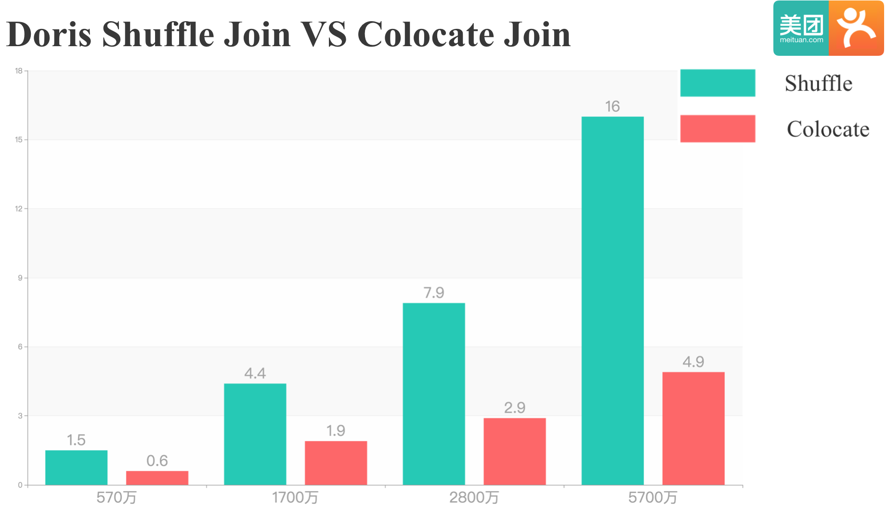
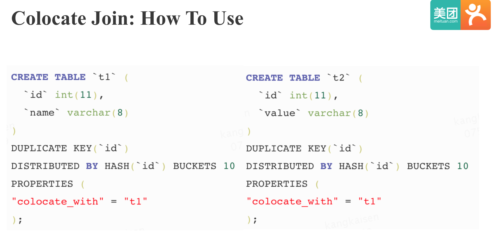
Colocate Join 功能已经贡献到 Doris 社区，大家在最新版本中就可以使用。 假如你需要将 t1 表和 t2 表设置为 Colocate table，只需要在建表时指定一个 colocate_with 属性就可以，使用起来十分简单。
未来规划
下面我简单介绍下我们的未来规划：
第一个是 Duplicate Key 模型支持聚合类型的 RollUp。 目前 Doris 明细表的 RollUp 表也必须是明细表，不能进行聚合，这样对上百亿数据现场进行聚合的成本还是蛮高的，所以我计划让 Doris 的明细表可以支持聚合模型的 RollUp，提前预计算，减少现场计算时的成本。
第二个是 支持倒排索引。我们业务多维过滤的需求很多，而仅靠目前的前缀索引很难满足这类需求，所以我们需要倒排索引来提升多维过滤查询的性能。
第三个是 面向内存的存储和查询引擎。 这个主要有 4 点原因：
- 我发现目前较多业务线的数据并没有很大，内存的容量完全可以 hold 住。
- 内存容量越来越大，价格越来越低。
- 我之前做查询执行多实例并发优化的时候发现，当并发度设置的更大时，Doris 的查询瓶颈首先出现在 IO，而不是 CPU。
- 业内已经有了成功的案例，比如 Snappydata, Memsql 等。
致谢
特别感谢百度 Doris 同学的帮助和支持，尤其是在 Doris BE C++ 问题的解决上。（之前我主要是 Java 技术栈，接触 Doris 的一年间，我的 C++ 技术栈也从零到入门，也渐渐喜欢上了 C++，今年计划投入更多业余时间在 C++ 上。）
也特别感谢我们各业务线数据组同学们的支持，尤其是外卖数据组的同学们，和我密切合作，一起趟坑，一起见证了 Doris 在美团点评从零到一个稳定，高效的 OLAP 平台的全过程。
欢迎体验 免费 极速 无需翻墙的 ChatGPT
欢迎来知识星球和我交流